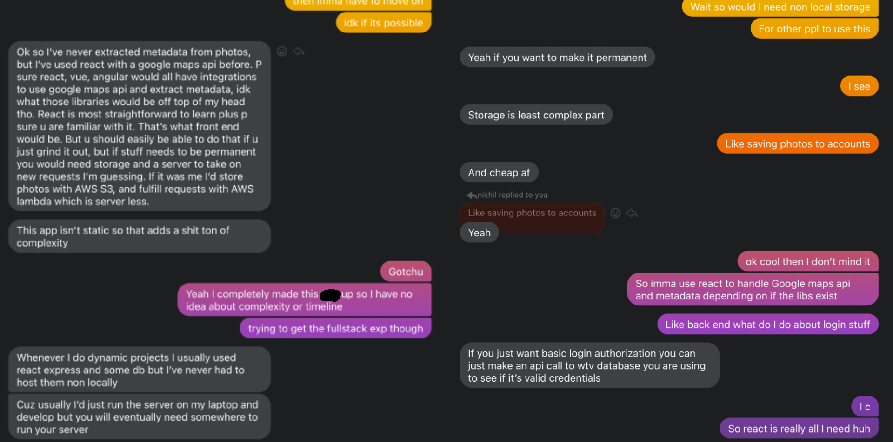
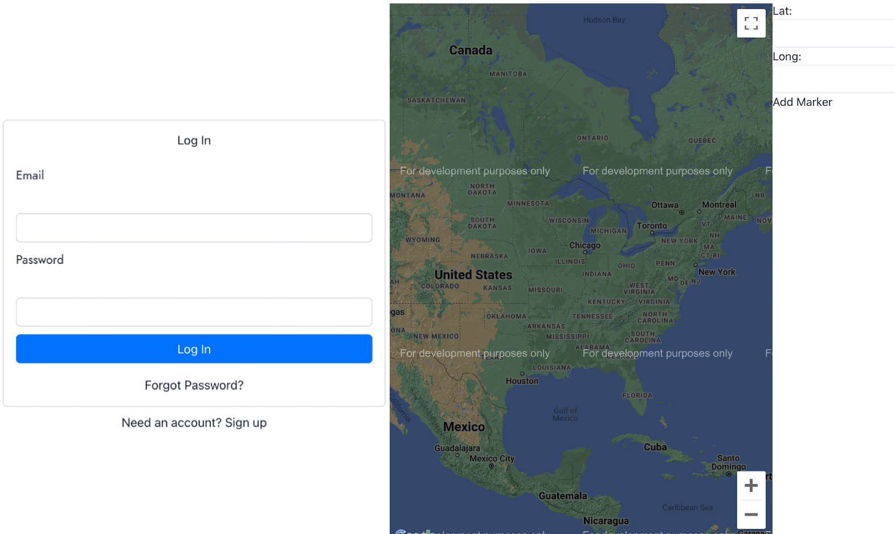
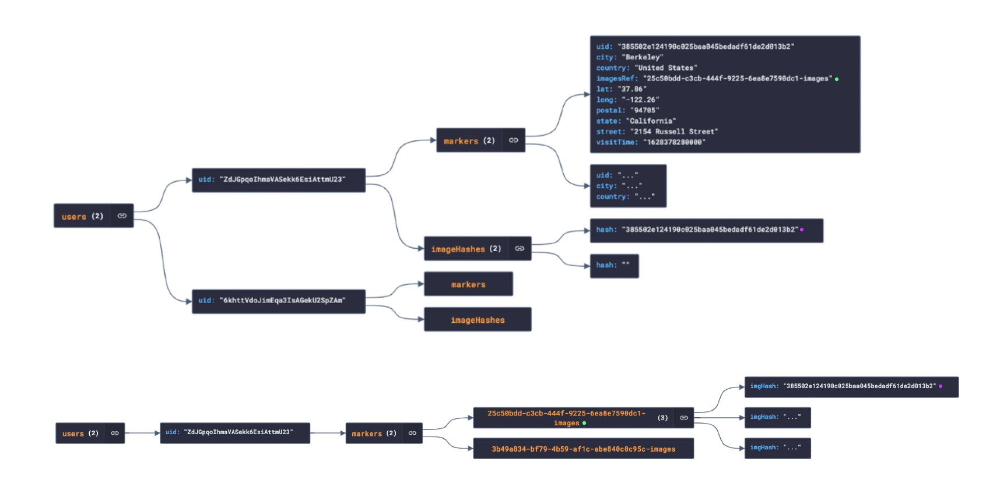

Constructing pin-and-string maps with image metadata
Project Overview
EXIF Mapper is a web application that chronologically maps user journeys based
on metadata from uploaded images. Users can upload multiple images at once, and
photos with EXIF metadata intact (like those taken from an Android or iPhone)
are read and translated into pins on an interactive map of the world.
KEY LEARNINGS
01
JavaScript & React
02
Full stack development
03
Database management
04
Working with docs
05
Using APIs (Firebase, Maps)
Initial Concept
Before I started this project, I wanted to learn how to create an
application that users can interact with. Creating a web application
seemed like the most accessible way for me to learn how to do this. I
also wanted to get involved with some degree of back-end development,
which I wasn't familiar with at the time. The idea I eventually came up wasn't revolutionary,
but was perfect for my goals and seemed like an interesting thing I wouldn't get bored of making.
Thanks to some guidance from my
very smart friend, I learned about some useful tools
that could help me deploy what I
envisioned. I started learning some JavaScript with the goal of learning
React (even though I wasn't sure yet why React would be useful) and read up on useful tools for
fulfilling authentication and data access requests. I eventually settled
on Firebase, which is very lightweight and straightforward enough for
this project.

I didn't know how to use any of the stuff my friend was talking about.
I barely knew what a library was, but I got some really helpful
pointers on where to start.
Learning Process
For this project, my primary goal was to get familiar with the
technologies I would need to build a basic web application. My action
items were to:
Read the entire React docs, which is supposedly really good according to some random guy on Stack Overflow over
7 years ago.
Learn how APIs work and how to integrate them into a project.
Get to know the Firebase and Google Maps APIs.
Figure out how to structure, retrieve, and store relevant data.
Make really stupid stuff like a counter. And a to-do list I'll never use.
Build the project.

I made a ton of garbage while messing around with components, hooks, contexts, routing, and debugging. Later on,
I ended up using some of the functional but unstyled components I put together during the experimentation stage.
Previously, I learned programming from online lectures and tutorials, and didn't
anticipate how much I could get out of reading documentation. This clicked for me as soon as
I read the React docs and went straight to making reusable components for the project - the
docs really lived up to their hype! Google Maps and Firebase docs were also very easy to
digest, and it was only when I was looking for libraries to read me.
Once I put together a basic login and main application UI, I mapped out how my application would generate,
store, and retrieve data (namely uploaded images, and stored locations since Firebase handles authentication
automatically.) I settled on something like this:

Firestore is a document-oriented database that stores data in collections of documents as opposed
to tables and rows. I stored users as collections, which contain subcollections for markers and hashed images
stored as JSON records.
Each marker contains a reference to a collection of images associated with the marker located in Firebase
Storage. Image hashes are stored in
Firestore database for the purpose of checking for duplicate images since Storage is being used for binary data
and can't be queried like a database.
Once I built out the data access and request fulfillment side, my project was fully functional (save a few bugs)
and all I needed to do was make it pretty enough to deploy!